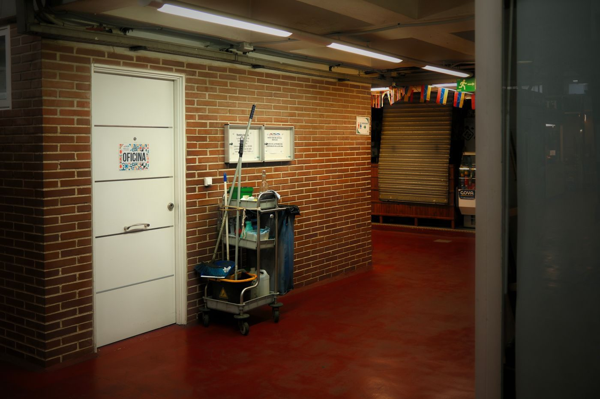
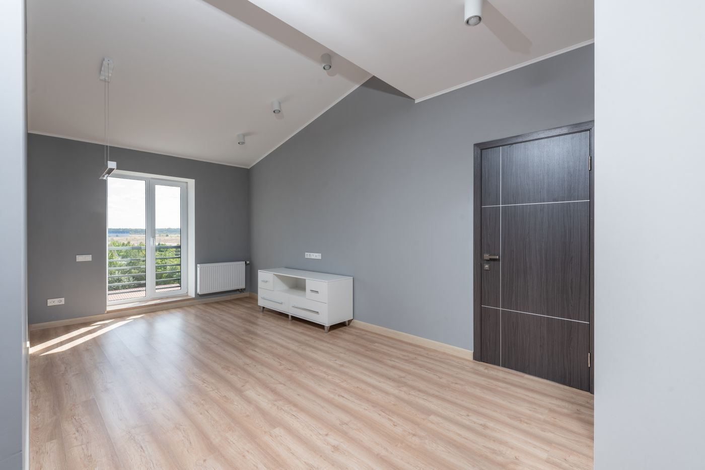
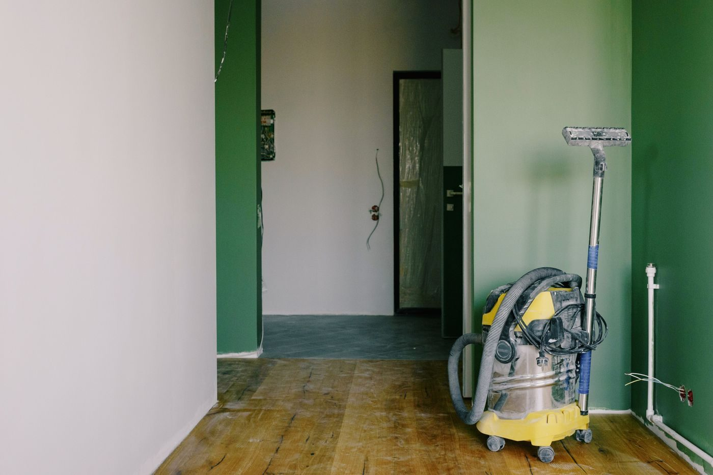

Services
Three service lines, each scoped in writing before work starts. Prices are fixed per building or per job, quoted within 24 hours of a walk-through.
Strata common-area cleaning
An annual service agreement covering the shared spaces that residents and councils judge the building by. We quote a fixed monthly rate after walking the property and writing the scope with the manager.
- Lobbies, corridors, stairwells, and elevator cabs
- Mailroom, garbage and recycling rooms, parkade sweep-and-scrub
- Glass at entries and lobby doors, fingerprints and touchpoints
- Weekly or bi-weekly visits, scheduled around garbage days
- Monthly quality scorecard sent to council or manager
What the agreement fixes: the visit frequency, the task list per area, the photo-report standard, the correction window (48 hours), and the price for the term.

Sample scope sheet (common areas)
- Entry and lobby: floors, mats, glass, touchpoints, waste
- Corridors: vacuum, spot mop, light fixtures within reach
- Stairs: treads, nosings, handrails, landings
- Elevator: cab floor, walls, tracks, call plates
- Garbage room: floors, bins wiped, odour control, recycling sorted to local rules
- Parkade: sweep, spot scrub, oil-dry where documented
Roofs, gutters, high-rise window washing above two storeys, and any regulated trade are excluded and stated on the quote.
Request a strata quote
What arrives with every turnover
- Time-stamped photo set of every room after cleaning
- Meter reads recorded on the visit sheet
- Keys or fob returned against a signed receipt
- Lockup check recorded, including windows and patio doors
- Written note of anything broken, missing, or unsafe
We do not perform repairs, move furniture as a moving service, or take on pest or hazardous-material work.
Book a turnoverTurnovers & listing-ready cleans
For landlords, property managers, and realtors who need a unit photographed and re-let quickly. Booked next-day where the schedule allows, with the evidence package attached the same evening.
- Full turnover clean: kitchen, bathrooms, floors, walls, fixtures, interiors of cupboards
- Listing-ready photo finish, including interior glass and hardware
- 24-hour response target inside the corridor
- Fixed per-unit price by size and condition, agreed before we start
- Condition notes so the landlord file is complete
Why the paperwork matters: a deposit dispute or a bad review is usually settled by a dated photo set. Ours is produced on every visit as standard, at no extra charge.
Post-construction & deficiency detail
Final cleans for builders, renovators, and homeowners closing out a project. Priced per square foot after a site walk, with the sequencing agreed around the remaining trades.
- Construction dust removal from surfaces, sills, vents, and fixtures
- Paint and adhesive film removal from glass and hard surfaces
- Cabinet interiors, appliance detailing, and floor finishing by material
- Deficiency walk support before the owner handover
- Work staged so final clean happens after the last trade leaves
Clear boundary: we clean around trades; we do not perform plumbing, electrical, gas, HVAC, or other regulated work, and we say so on every quote.

Site walk checklist
- Square footage by floor and type
- Number of bathrooms, kitchens, and glass panels
- Flooring materials and finishes specified
- Remaining trades and their completion dates
- Waste removal responsibility, water, and power access
- Handover date and the deficiency-list owner
Extras that fit inside a normal visit
Added to an existing agreement or booked as one-off work. Each is quoted before it is scheduled.
Condition reports
Photo and written condition report for a unit, floor, or common area. Useful before a tenancy starts or ends.
Interior glass
Interior glass, partitions, and entry doors brought to a streak-free finish.
Seasonal deep cleans
Spring and fall deep cleans for common areas: light fixtures, vents, and high dusting within safe reach.
Small-office routes
Scheduled cleaning for offices and clinics up to 3,000 sq ft on the same corridor routes.
The parts clients can hold us to
Written before spoken
Scope sheets, quotes, and change notes are written documents. If a task is not in the scope sheet, it is either added in writing or not done — which keeps invoices boring and predictable.
Documented after done
Time-stamped photos, meter reads where relevant, and lockup records. The monthly scorecard summarises the evidence so renewal does not depend on memory.
Chemistry with a paper trail
Eco-certified products, safety data sheets kept on site, closed-loop microfibre laundering, and recycling sorted to the local rules.
Covered and registered
WorkSafeBC registration and commercial general liability coverage in place before any crew member works on a site. Certificate of insurance on request.
Tell us about the building
Send the address and the type of clean. We will propose a walk-through time the same day.